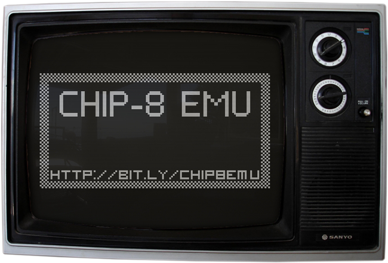

CHIP 8 Emulator written in HAXE/OpenFL
CHIP-8 EMU is (hopefuly successful) attempt to create emulator of famous "virtual computer" in HAXE/OpenFL language. My aim is to create user friendly emulator with embeded roms of games and programs, which is easy to pickup and play.
If you are new to emulation world like I am, you can use my code as bootstrap or inspiration for your own project. Just please note that I am not professional HAXE developer nor I am emulator creation veteran.
Current stable version: 1.0
Current dev version: 1.0.9
Features:
- old school TV-like experience
- many public domain ROMs included
- easy ROM loading
- keymap screen
- all chip-8 opcodes implemented
- basic debug information (press F12)
- running speed is 500 steps per second
- keyboard mapped to 1234/qwer/asdf/zxcv keys
- compiles only for NEKO/CPP
- original fontset as separate data file, ability to load custom fontset/bios
- beep using wave sound fileFuture plans:
- other targets support (Android/HTML5/Flash)
- Super CHIP-8 instructions implementationSo what are you waiting for? Go download emulator binary, play, get code, fork, hack, enjoy!
CHIP-8 is an interpreted programming language, originaly developed by Joseph Weisbecker in mid-70th, later expanded by Erik Bryntse to it's SuperCHIP-8 variant, enabling developer to easily scroll screen, use higher resolution and added few more other useful opcodes.
(S)CHIP-8 have very limited resources to work with, only 3584 bytes of memory (ROM/RAM combined), 16 registers 1 byte each, 2 byte memory pointer, 64x32 (128x64 for SCHIP) b&w graphics, single tone beeper, 1 bit (60Hz) delay timer, 16 keys input and <40 opcodes for instructions. Even with such limited resources developers were able to create fun little games and programs, that are worth playing even today.
Because CHIP-8 has so little resources, it's ofter first choice of emulator noobies like me. It's easy to implement cpu core and handle graphics, it's small instruction set and slow cpu cycle (100-2000Hz) make it easy to emulate it even on obscure platforms with very good performance.
I am Petr Kratina (@AfBu of GitHub) - developer from Czech Republic, have own little company called Dark York. You can reach me on Twitter or e-mail: .
Resources used: